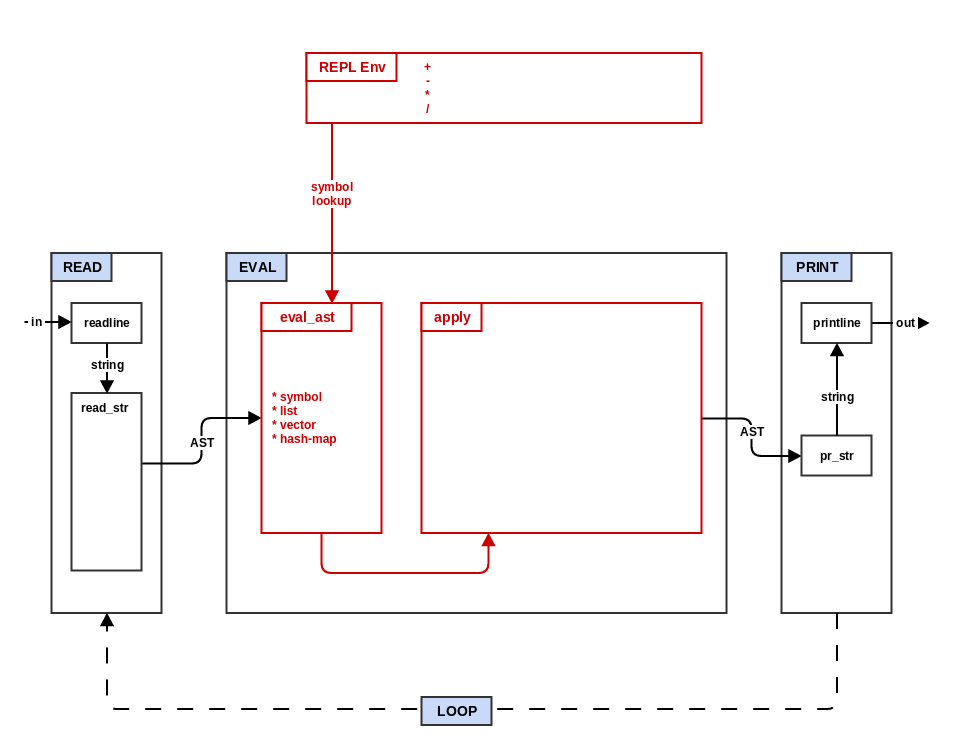
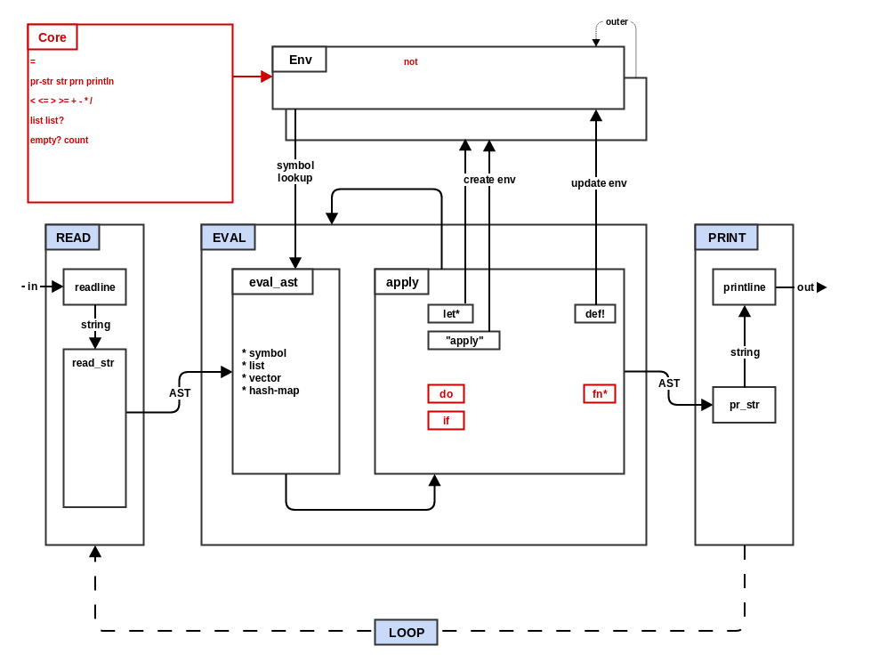
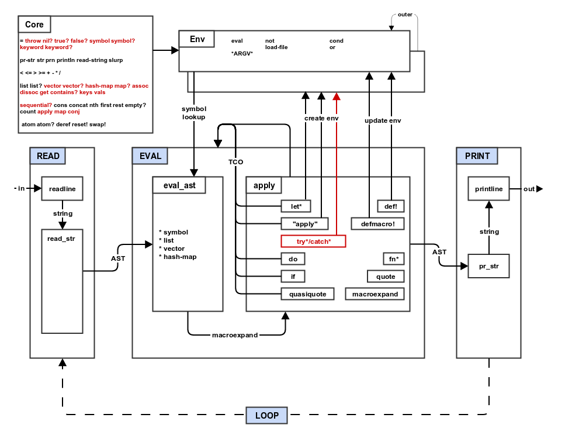

Make-A-Lisp
Make Your Own Lisp Interpreter in 10 Incremental Steps
LambdaConf 2016
Press 's' to show speaker notes
About Me
Joel Martin (kanaka)
Principal Software Engineer at ViaSat, Inc
Clojure
Satellites!
Creator of noVNC and websockify
Front Matter
- Goal: Learn Lisp by creating a Lisp Interpreter
- Prerequisites:
- Moderate experience in any PL is recommended.
- git clone github.com/kanaka/mal.tutorial
- git, make and one of: ruby, node.js, or python
- Resources:
- github.com/kanaka/mal/blob/master/process/guide.md
- kanaka.github.io/mal/process/cheatsheet.html
- lambdaconf.slack.com: #workshop_make_a_lisp
- #mal at irc.freenode.net:6667
Agenda
- Lisp Crash Course
- Mal and the Make-A-Lisp Process
- Step 0
- Step 1 (Ruby)
- --- 10 min break ---
- Step 2 (JavaScript)
- Step 3 (Python)
- --- 30 min break ---
- Step 4 (Ruby)
- Step 5 (JavaScript)
- --- 10 min break ---
- Step 6 (Python)
- Step 6++ (Ruby)
- Steps 7-A
- Finishing Thoughts
Lisp Crash Course
(+ 1 41)
user> 42
42
user> "forty two"
"forty two"
user> +
#<plus function>
user> abc
[not found]
user> [+ 20 22]
[#<plus function> 20 22]
user> [* 2 [+ 1 20]]
[#<mult function> 2 [#<plus function> 1 20]]
user> (+ 20 22)
42
user> (* 2 (+ 1 20))
42
user> (if true (prn 3) (prn 4))
3
nil
user> (if false (prn 3) (prn 4))
4
nil
user> (def! abc (+ 1 2))
3
user> abc
3
user> (fn* (a b) (* a b))
(fn* (a b) (* a b))
user> ( (fn* (a b) (* a b)) 6 7 )
42
The Inspiration
- Gherkin
- lispy

Mal Beginnings
JS
...
function read_form(reader) {
var token = reader.peek();
switch (token) {
// reader macros/transforms
case ';': return null; // Ignore comments
case '\'': reader.next();
return [types._symbol('quote'), read_form(reader)];
case '`': reader.next();
return [types._symbol('quasiquote'), read_form(reader)];
case '~': reader.next();
return [types._symbol('unquote'), read_form(reader)];
...
GNU Make
...
define READ_FORM
$(and $(READER_DEBUG),$(info READ_FORM: $($(1))))
$(call READ_SPACES,$(1))
$(foreach ch,$(word 1,$($(1))),\
$(if $(filter $(SEMI),$(ch)),\
$(call DROP_UNTIL,$(1),$(_NL)),\
$(if $(filter $(SQUOTE),$(ch)),\
$(eval $(1) := $(wordlist 2,$(words $($(1))),$($(1))))\
$(call _list,$(call _symbol,quote) $(strip $(call READ_FORM,$(1)))),\
$(if $(filter $(QQUOTE),$(ch)),\
$(eval $(1) := $(wordlist 2,$(words $($(1))),$($(1))))\
$(call _list,$(call _symbol,quasiquote) $(strip $(call READ_FORM,$(1)))),\
$(if $(filter $(UNQUOTE),$(ch)),\
...
"Make Lisp"
Bash
...
READ_FORM () {
local token=${__reader_tokens[${__reader_idx}]}
case "${token}" in
\') __reader_idx=$(( __reader_idx + 1 ))
_symbol quote; local q="${r}"
READ_FORM; local f="${r}"
_list "${q}" "${f}" ;;
\`) __reader_idx=$(( __reader_idx + 1 ))
_symbol quasiquote; local q="${r}"
READ_FORM; local f="${r}"
_list "${q}" "${f}" ;;
...
C
...
MalVal *read_form(Reader *reader) {
char *token;
MalVal *form = NULL, *tmp;
token = reader_peek(reader);
if (!token) { return NULL; }
switch (token[0]) {
case ';':
abort("comments not yet implemented");
break;
case '\'':
reader_next(reader);
form = _listX(2, malval_new_symbol("quote"),
read_form(reader));
break;
...
Python
...
def read_form(reader):
token = reader.peek()
# reader macros/transforms
if token[0] == ';':
reader.next()
return None
elif token == '\'':
reader.next()
return _list(_symbol('quote'), read_form(reader))
elif token == '`':
reader.next()
return _list(_symbol('quasiquote'), read_form(reader))
...
Clojure
...
;; Override some tools.reader reader macros so that we can do our own
;; metadata and quasiquote handling
(alter-var-root #'r/macros
(fn [f]
(fn [ch]
(case ch
\` (wrap 'quasiquote)
\~ (fn [rdr comma]
(if-let [ch (rt/peek-char rdr)]
(if (identical? \@ ch)
((wrap 'splice-unquote) (doto rdr rt/read-char) \@)
((wrap 'unquote) rdr \~))))
...
PHP
...
function read_form($reader) {
$token = $reader->peek();
switch ($token) {
case '\'': $reader->next();
return _list(_symbol('quote'),
read_form($reader));
case '`': $reader->next();
return _list(_symbol('quasiquote'),
read_form($reader));
case '~': $reader->next();
return _list(_symbol('unquote'),
read_form($reader));
...
Java
...
public static MalVal read_form(Reader rdr)
throws MalContinue, ParseError {
String token = rdr.peek();
if (token == null) { throw new MalContinue(); }
MalVal form;
switch (token.charAt(0)) {
case '\'': rdr.next();
return new MalList(new MalSymbol("quote"),
read_form(rdr));
case '`': rdr.next();
return new MalList(new MalSymbol("quasiquote"),
read_form(rdr));
...
An Accidental Discovery
"Make Lisp" became "Make-A-Lisp"
Mal and More Mal
PostScript
...
% read_form: read the next form from string start at idx
/read_form { 3 dict begin
read_spaces
/idx exch def
/str exch def
idx str length ge { null str idx }{ %if EOF
/ch str idx get def % current character
ch 39 eq { %if '\''
/idx idx 1 add def
str idx read_form
3 -1 roll /quote exch 2 _list 3 1 roll
...
C#
...
public static MalVal read_form(Reader rdr) {
string token = rdr.peek();
if (token == null) { throw new MalContinue(); }
MalVal form = null;
switch (token) {
case "'": rdr.next();
return new MalList(new MalSymbol("quote"),
read_form(rdr));
case "`": rdr.next();
return new MalList(new MalSymbol("quasiquote"),
read_form(rdr));
...
Ruby
...
def read_form(rdr)
return case rdr.peek
when ";" then nil
when "'" then rdr.next; List.new [:quote, read_form(rdr)]
when "`" then rdr.next; List.new [:quasiquote, read_form(rdr)]
when "~" then rdr.next; List.new [:unquote, read_form(rdr)]
when "~@" then rdr.next; List.new [:"splice-unquote", read_form(rdr)]
when "^" then rdr.next; meta = read_form(rdr);
List.new [:"with-meta", read_form(rdr), meta]
...
Perl
...
sub read_form {
my($rdr) = @_;
my $token = $rdr->peek();
given ($token) {
when("'") { $rdr->next(); List->new([Symbol->new('quote'),
read_form($rdr)]) }
when('`') { $rdr->next(); List->new([Symbol->new('quasiquote'),
read_form($rdr)]) }
when('~') { $rdr->next(); List->new([Symbol->new('unquote'),
read_form($rdr)]) }
...
Go
...
func read_form(rdr Reader) (MalType, error) {
token := rdr.peek()
if token == nil {
return nil, errors.New("read_form underflow")
}
switch *token {
case `'`:
rdr.next()
form, e := read_form(rdr)
if e != nil {
return nil, e
}
return List{[]MalType{Symbol{"quote"}, form}, nil}, nil
...
Rust
...
fn read_form(rdr : &mut Reader) -> MalRet {
let otoken = rdr.peek();
let stoken = otoken.unwrap();
let token = &stoken[..];
match token {
"'" => {
let _ = rdr.next();
match read_form(rdr) {
Ok(f) => Ok(list(vec![symbol("quote"), f])),
Err(e) => Err(e),
}
},
...
R
...
read_form <- function(rdr) {
token <- Reader.peek(rdr)
if (token == "'") {
. <- Reader.next(rdr);
new.list(new.symbol("quote"), read_form(rdr))
} else if (token == "`") {
. <- Reader.next(rdr);
new.list(new.symbol("quasiquote"), read_form(rdr))
} else if (token == "~") {
. <- Reader.next(rdr);
new.list(new.symbol("unquote"), read_form(rdr))
...
CoffeeScript
...
read_form = (rdr) ->
token = rdr.peek()
switch token
when '\'' then [_symbol('quote'), read_form(rdr.skip())]
when '`' then [_symbol('quasiquote'), read_form(rdr.skip())]
when '~' then [_symbol('unquote'), read_form(rdr.skip())]
when '~@' then [_symbol('splice-unquote'), read_form(rdr.skip())]
when '^'
meta = read_form(rdr.skip())
[_symbol('with-meta'), read_form(rdr), meta]
when '@' then [_symbol('deref'), read_form(rdr.skip())]
...
VB.NET
...
Shared Function read_form(rdr As Reader) As MalVal
Dim token As String = rdr.peek()
If token Is Nothing Then
throw New MalContinue()
End If
Dim form As MalVal = Nothing
Select token
Case "'"
rdr.get_next()
return New MalList(New MalSymbol("quote"),
read_form(rdr))
...
Scala
...
def read_form(rdr: Reader): Any = {
return rdr.peek() match {
case "'" => { rdr.next; _list(Symbol("quote"), read_form(rdr)) }
case "`" => { rdr.next; _list(Symbol("quasiquote"), read_form(rdr)) }
case "~" => { rdr.next; _list(Symbol("unquote"), read_form(rdr)) }
case "~@" => { rdr.next; _list(Symbol("splice-unquote"), read_form(rdr)) }
case "^" => { rdr.next; val meta = read_form(rdr);
_list(Symbol("with-meta"), read_form(rdr), meta) }
case "@" => { rdr.next; _list(Symbol("deref"), read_form(rdr)) }
...
Haskell
...
read_form :: Parser MalVal
read_form = do
ignored
x <- read_macro
<|> read_list
<|> read_vector
<|> read_hash_map
<|> read_atom
return $ x
read_str :: String -> IOThrows MalVal
read_str str = case parse read_form "Mal" str of
...
Racket
...
(define (read_form rdr)
(let ([token (send rdr peek)])
(if (null? token)
(raise (make-blank-exn "blank line" (current-continuation-marks)))
(cond
[(equal? "'" token) (send rdr next) (list 'quote (read_form rdr))]
[(equal? "`" token) (send rdr next) (list 'quasiquote (read_form rdr))]
[(equal? "~" token) (send rdr next) (list 'unquote (read_form rdr))]
[(equal? "~@" token) (send rdr next) (list 'splice-unquote (read_form rdr))]
[(equal? "^" token) (send rdr next)
(let ([meta (read_form rdr)])
(list 'with-meta (read_form rdr) meta))]
...
Lua
...
function M.read_form(rdr)
local token = rdr:peek()
if "'" == token then
rdr:next()
return List:new({Symbol:new('quote'), M.read_form(rdr)})
elseif '`' == token then
rdr:next()
return List:new({Symbol:new('quasiquote'), M.read_form(rdr)})
elseif '~' == token then
rdr:next()
return List:new({Symbol:new('unquote'), M.read_form(rdr)})
...
OCaml
...
and read_form all_tokens =
match all_tokens with
| [] -> raise End_of_file;
| token :: tokens ->
match token with
| "'" -> read_quote "quote" tokens
| "`" -> read_quote "quasiquote" tokens
| "~" -> read_quote "unquote" tokens
| "~@" -> read_quote "splice-unquote" tokens
| "@" -> read_quote "deref" tokens
...
Mal Today
Let's Make a Lisp
- Hint, to catch up:
git checkout stepX_completed
- where X is current step - 1
The Steps
Step 0 - Read/Eval/Print Loop

Choose One:
Ruby
step0_repl.rb
require "readline"
while line = Readline.readline("user> ", true)
puts line
end
JavaScript
step0_repl.js
var rlSync = require('./readline').readlineSync
while ((line = rlSync('user> ')) !== null) {
console.log(line)
}
Python 3
step0_repl.py
import readline
while True:
try: print(input("user> "))
except EOFError: break
Step 0 Hands On
- Verify you can run Step 0 in your target language:
ruby ruby/step0_repl.rb
node js/step0_repl.js
python3 python/step0_repl.py
- Get Step 0 tests to run in your target language:
make OPTIONAL=0 test^ruby^step0
make OPTIONAL=0 test^js^step0
make OPTIONAL=0 test^python^step0
Step 1 - Reader & Printer

The Reader
Step 1 Hands On
- Finish implementing read_list() in reader.EXT
- Get step 1 tests to pass:
make OPTIONAL=0 test^IMPL^step1
Step 2 - Expression Evaluation

Step 3 - Lexical Environments

Step 4 - Conditionals, Closures & Side-Effects

Step 5 - Tail-Call Optimization
Step 6 - Files, Atoms, Arguments & Eval
Step 7 - Quote & Quasiquote
Step 8 - Macros
Step 9 - Exception Handling

Step A - Mal

Questions?
Extra Material
New Implementation Ideas
- Something old
- Fortran
- COBOL
- Assembly
- Something new
- Idris
- Elm
- TypeScript
- Something borrowed
(from another domain)
- TeX
- Prolog
- nginScript
- Something blue
(corporate/government)
- PowerShell
- ColdFusion
- MUMPS (OpenM)